An analysis across two repositories
The fourth live run of §35, 10 November 2026, made after the patch directory was synchronised with de17 in full and the servers restarted. Same question, same two repositories, a real model.
The earlier runs are kept beside this one:
the 02:17 run of the same morning, made against the
old resolution behaviour; 9 November, the first that
answered; and the run before that, which spent its whole round budget exploring and was
cut off with nothing to show — kept as
cut-short/run.json and four
screenshots, since it has no report to show.
These pictures are a harness, not the client. The runs are driven by
tests/analysis-live.mjs, which builds a minimal page so that both
credentials can be held outside the browser. That page imports the real
App, the real location bar and the real analysis path — the
behaviour recorded here is the shipped behaviour — but it skips sign-in and
navigation and draws no sidebar or pane tabs, so it does not look like the
client a reader uses. For what the end user actually sees and does, see
Asking Across Several
Repositories in the user manual, which is illustrated from the shipped
client.
What this run was for
The resolution fix is in the service and in use. Probed immediately
before the run, across all seven operators the change distinguishes:
$contains, $starts, $ends,
$regex and $lang leave their operand alone, while
$eq and $in still resolve theirs and still report what
they cannot find. The control matters as much as the result: the resolver is
discriminating, not switched off.
The run then issued eight narrow calls — one
$contains and seven $regex — every one of them with a
bare-name operand. The word
unresolved does not occur anywhere in the report. The false
caveat of 9 November — "the server reported $lang: en as
unresolved, so the language filter may not have been applied" — has no
counterpart here, because there was nothing to misread.
The closing turn earned its place. The model spent all twenty-six
rounds on tool calls, as it did in the cut-short run. That one ended with
stopped after 26 tool rounds and no report at all. This one was
asked once more with no tools offered, and wrote the report below — six
sections, a candidate table, and a Not established that names the
specific select it issued and never read. The interface says so in its own
footer rather than letting the reader assume the exploration finished:
the exploration was stopped at the 26-round limit
. This is REQ-35.5
working against a real model for the first time.
The model found two more service defects, and this time it was right about both.
1. @optional is inert when the same predicate is also named
in @shape. It reported: "The @optional properties
were also compiled as required patterns, so the optional
declarations
had no effect." Reproduced directly afterwards against
james/fibo —
{ @type: owl:Class, @shape: [rdfs:label, rdfs:subClassOf],
@optional: [rdfs:subClassOf], @limit: 5 }
compiles to
SELECT ?RDFS_LABEL ?RDFS_SUBCLASSOF ?RDFS_SUBCLASSOF
WHERE { { { ?S rdf:type owl:Class .
?S rdfs:label ?RDFS_LABEL .
?S rdfs:subClassOf ?RDFS_SUBCLASSOF }
OPTIONAL
{ ?S rdfs:subClassOf ?RDFS_SUBCLASSOF } }}}
The predicate is required and optional, so the OPTIONAL rebinds a
variable that is already bound and cannot widen anything; and the variable is
projected twice. Named in @optional alone it compiles correctly,
so the defect is exactly the overlap.
compile-standard-shape-algebra builds its required triple patterns
from @shape and then appends @optional without
consulting what it already has. @optional is the more specific
declaration and should win: the predicate belongs in the leftjoin and not in
the BGP, and its variable should be projected once.
2. A format name is run through vocabulary resolution.
materialize takes a format, not a score body — and
{"op":"materialize","body":"sparql"} answers with
unresolved: [sparql]. It is the same false signal that
$lang: en gave, one level up: score-run passes every
operation's body through resolve-names uniformly, and a bare
scalar body has no control key above it that the
*score-control-keys* table could protect. The model did not act on
it this time. Neither did it act on $lang at 02:17; on 9 November
it did.
The run
| Model turns | 27 — 26 with tool calls, the last the closing turn that wrote the report |
|---|---|
| Served as | claude-opus-5-5 |
| Tool calls | 37 — 32 to a store (james/finto 22, james/fibo 10) and 5 client-side result_full |
| Operations chosen | select 14, narrow 8, result_full 5, catalog 3, profile 3, connect 2, materialize 2 |
| Service requests | 40 — all answered 200 |
| Tokens | 697 055 in, 12 600 out |
| Recorded as | two transcripts in james/mcp, one per store |
Two things about that table are new. Every one of the forty service requests
was answered — the 02:17 run lost five to dropped connections, two of them on
the opening catalog of each store, and this one lost none. And
GET /system/accounts/james/collaboration, which answered 502 in all
three earlier runs, answered 200 with a body in this one — so the
account-collaboration read path of the bundle is now serving.

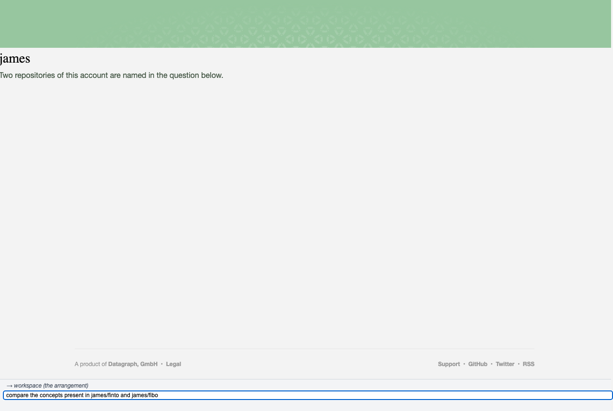
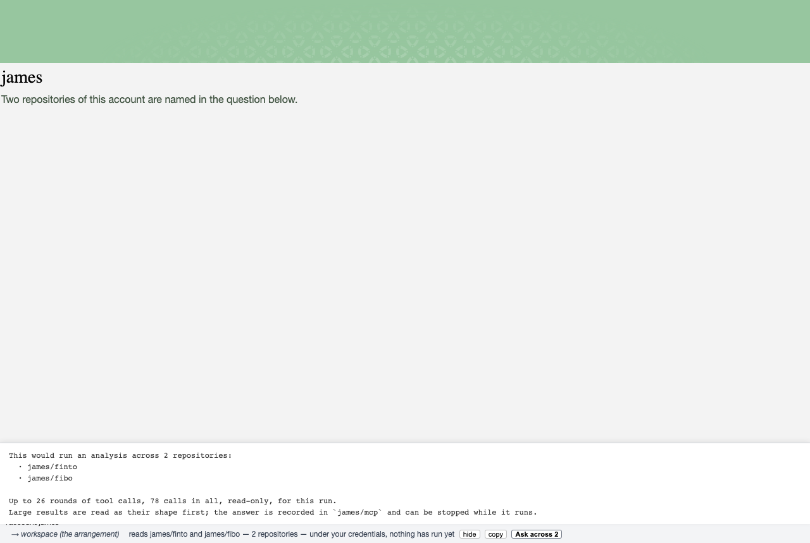

narrow with $contains and a bare-name operand. Before the fix this is the call that came back with the operand listed as unresolved.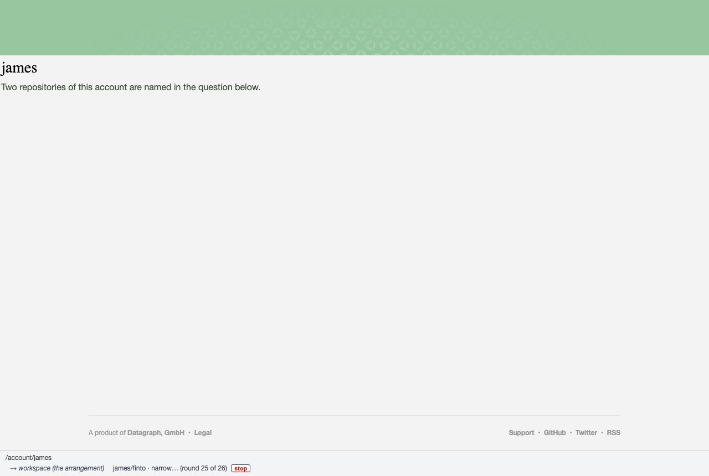
skos:altLabel, which the 02:17 run had to list under Not established as never searched. Here it is what finds the housing-finance slant in finto's loan labels.The answer
In full as report.md; the run's own
record, every turn and every call, in run.json.
Its first move is the one that matters: it refuses to treat the comparison as
a search for matching words. james/finto holds 96,797
skos:Concept — topics for indexing, labelled in three languages,
arranged by broader and narrower, and carrying 52 definitions between them.
james/fibo holds four owl:Class with textual
definitions, named superclasses and property restrictions on their members.
"Any correspondence across the two is therefore a topic about
relation,
not class equivalence." Everything after that is argued under that constraint,
and the categories in the candidate table are declared as the model's own
words rather than borrowed from SKOS.
It proposes five candidates with confidences and one explicit not a match — finto distinguishes "loans (amount of money)" from "loans (loaned object)", and only the first is a counterpart to FIBO's commercial loan. It then records the searches that found nothing, which is the part a reader needs: no business, corporate or commercial loan label exists in finto under any of the English or Finnish patterns it tried, and the altLabels it did find — "lainat", "aravalainat" — show a Finnish housing-finance slant rather than a commercial one.
Its Not established is the longest of the four runs and the most specific. It names the select it issued and never read (node n21, the narrower concepts of finto's loan concept, where a commercial-loan-like term could still be hiding); it says the grouped query failed with a type error, so the distribution of concepts across finto's schemes is unknown and LIITO — the business ontology, the most relevant vocabulary here — may or may not be loaded; and it is explicit that absence of a match means "not found by these searches", not "absent".
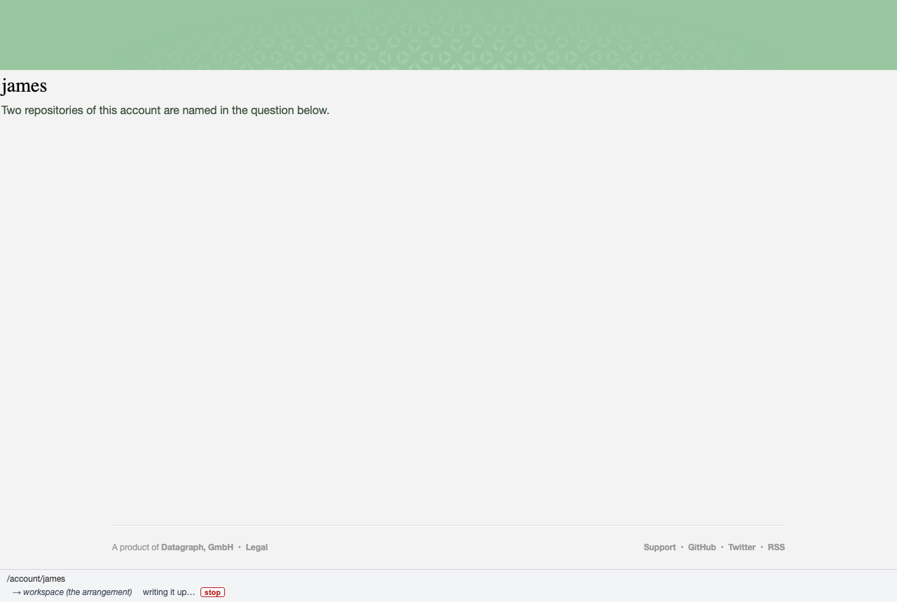
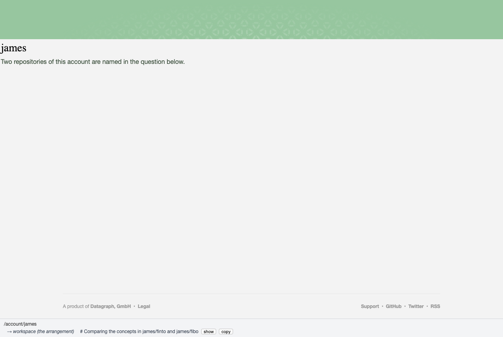
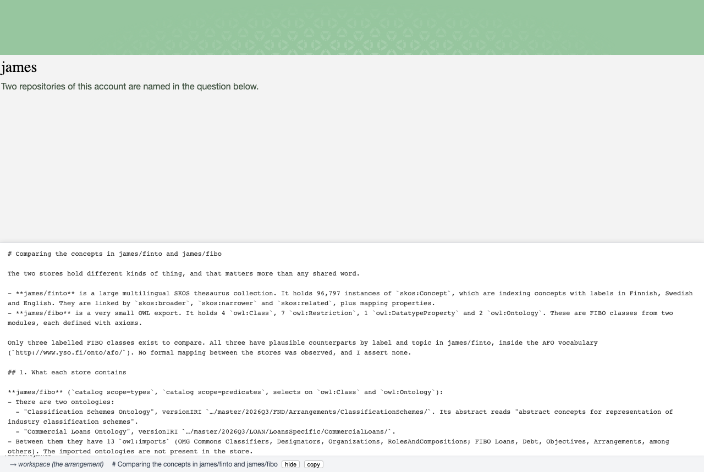
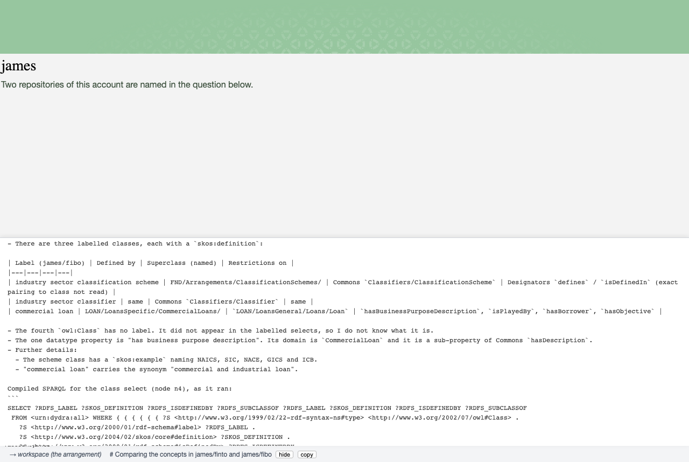
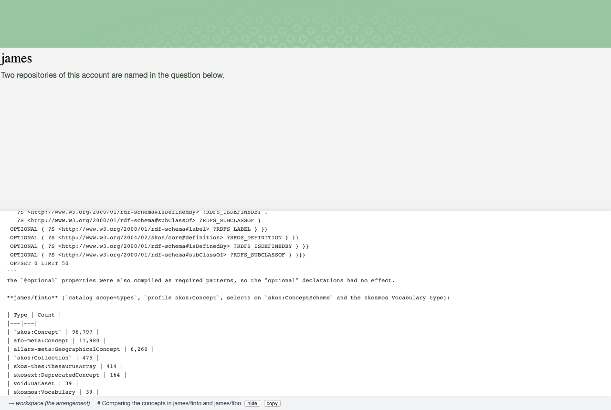
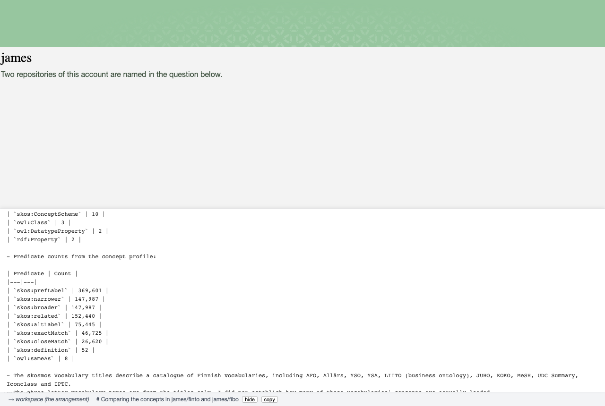
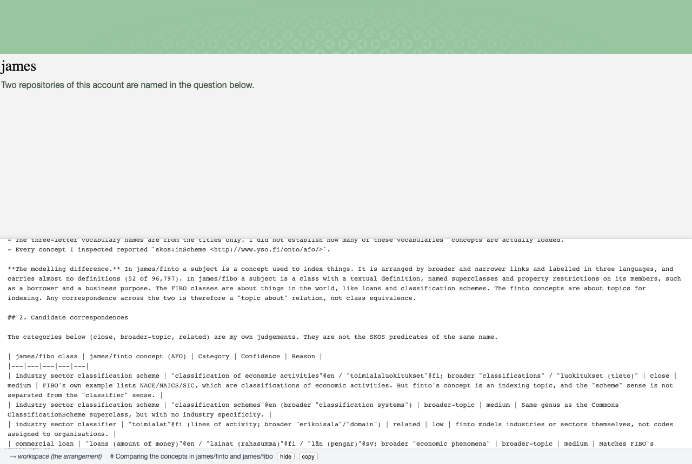
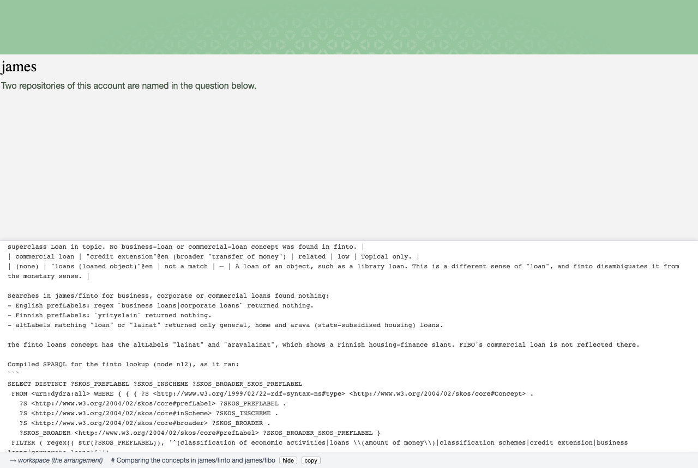
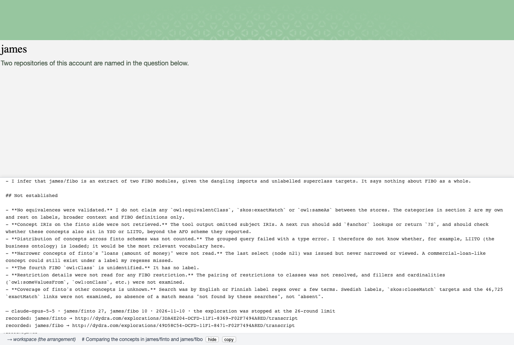
What is not established about this run
- The two defects above are not fixed. They are reproduced and diagnosed, and the code was not changed.
- Whether the model's substantive conclusions are right is a question for someone who knows these vocabularies. What is established is how it arrived at them and what it declined to claim.
- The round budget was spent again. Twenty-six rounds is enough to answer this question only because the closing turn exists; it is not enough to explore both stores to the model's own satisfaction.